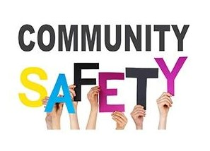
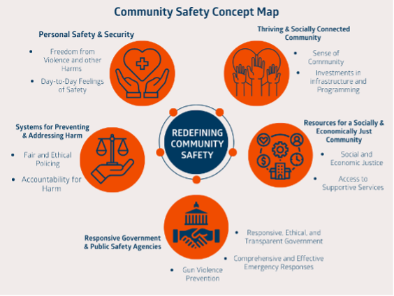
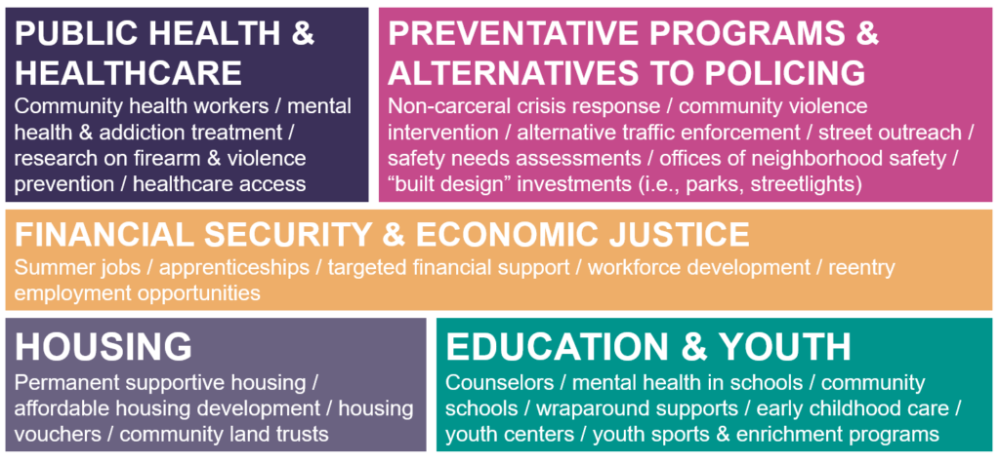
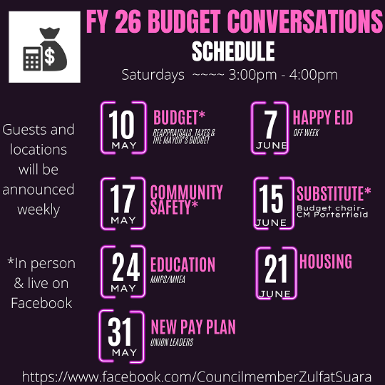

Community Safety – Defining – Envisioning – Exploring
Hello everyone. Thank you, as always, for being part of this ongoing journey as we try to build a better, safer, more just Nashville together. Over the past few weeks, we’ve had a series of conversations on our city’s budget. We’ve talked about education, our children, the cost of living, and the needs of our workers. But this past Saturday, we turned to one of the most pressing—and one of the most complex—topics of all: community safety.
Overall, major crime is down 8.3%. Violent Crime is down 8.5%. Property Crime is down 8.2%
CHief Drake- 05/21/25
Now, I want to be very clear—this was not just another meeting about crime. We didn’t gather to throw statistics around or argue about headlines. We gathered to ask each other something deeper: What does safety actually mean to you? When you say you want to feel safe, what are you really saying? For most people, when you ask that question and give them the space to answer fully, the answer has little to do with police or jails, or surveillance cameras. The answers are about family. About food. About being able to walk down the street without being afraid. About feeling known and seen.
As I listened to each person speak, a theme started to emerge: safety is not just individual, it is communal. It’s relational. It’s emotional. It’s about trust. And it looks different in different communities. So if we want to create real safety in Nashville, then we must move away from a one-size-fits-all model. We must stop pretending that safety means the same thing for everyone or that it can only come from the same systems we’ve always relied on.
What Safety Really Mean?
When we talk about safety in Nashville, we have to ask—safety for whom, and by what means? It’s a question that becomes more urgent every day, as our neighborhoods wrestle with fear, trust, and how we respond to harm. It’s not enough to look at crime statistics or spend millions on technology. We must ask ourselves: Do our policies reflect the safety that people actually feel in their homes, schools, and communities?
On a recent Saturday afternoon, I hosted a community conversation at Trinity Community Commons to address this very question. It was one of several budget conversations we’ve held this spring, but this one was particularly personal. It focused not just on public safety in the traditional sense—but on community safety, a concept rooted in care, prevention, and dignity.

Why Have This Conversation Now?
In early May, the Immigration and Customs Enforcement Agency (ICE), along with the Tennessee Highway Patrol (THP), conducted a targeted and discriminatory raid in Nashville. The raid was discriminatory as it targeted South/Southeast Nashville, where many immigrants live. Several individuals arrested were everyday folks, without any criminal charges. Additionally, many of the folks arrested were not granted due process. We still don’t have the full names of all the 196 detained or where they are.
DHS has touted the raid as a way to keep residents safe, though the facts in the release did not support this assertion. Instead, like many, I believe this raid is targeted, discriminatory, and unconstitutional, and will erode people’s trust in law enforcement and threaten safety. See the DHS statements here and my interview on Inside Politics here.
The ICE raid has stirred fear in immigrant and working-class communities. At the same time, there’s been continued debate over surveillance tools like License Plate Readers (LPRs) and the FUSUS real-time crime center. On one hand, there are individuals who believe these tools enhance their safety. On the other hand, despite the rhetoric around “keeping us safe,” many residents have shared a very different experience—one of being watched, not protected. Of being policed, but not supported.
So what is safety? This conversation tackles the long overdue need for a broader and more honest conversation about what safety really looks like.
Meet the Panelists
Councilmember Jacob Kupin (District 19)
CM Kupin represents a central and diverse part of Nashville, including Germantown and the East Bank. He reflected on the emotional aspect of safety, emphasizing that the feeling of being safe is just as important as the data we use to measure it. He described efforts to find common ground on issues like reckless driving enforcement and pointed out how safety is deeply personal and subjective.
He shared how in his district, there are people on every side of the debate around public safety tools like LPRs and FUSUS. He spoke about how safety is not just about the presence or absence of crime, but about how people feel. You can have crime going down, but if people don’t feel safe, then something is still missing. He also reminded us that safety also means being able to walk outside without fear—of a car speeding down your street, or of not being able to get back home.
Rev. Davie Tucker (Metro Human Relations Commission)
Rev. Davie Tucker, a longtime pastor and leader who is also the Executive Director of the Metro Human Relations Commission. I’ve known Rev. Tucker for many years, and when he speaks, you listen. He said something that stuck with me. He said that safety is a state of peace. It’s not just about preventing harm, but about creating conditions where people can live without anxiety, without fear, and with dignity. He challenged us to think about how class and race shape our understanding of safety.
Rev. Tucker brought a critical perspective on how policy and class shape our understanding of safety. He reminded us that poverty, housing insecurity, and food access are safety issues. His comments highlighted the importance of not criminalizing poverty and instead building systems that address the structural causes of harm.
Andrew Krinks (People’s Budget Coalition)
Andrew spoke about the need to shift city resources away from punitive models and toward community-rooted solutions. He argued that safety begins with meeting people’s needs—housing, food, healthcare—and called for sustained investment in grassroots efforts. Andrew gave us a framework for thinking about the investments we make. He pointed out what many of us have seen in the budget year after year: that our funding for policing is stable and strong, while funding for prevention and care comes in the form of pilot programs and one-time grants. He challenged us to think about why that is.
Why do we treat community safety programs like experiments, while we treat traditional enforcement like essentials? He reminded us that there are grassroots safety efforts already happening—neighbors looking out for neighbors, mutual aid groups, youth workers, crisis teams—and they need resources and recognition, not just praise. He shared the People’s Budget Coalition’s proposal to fund a team dedicated to a comprehensive community safety plan that starts with engagement and trust.
Brenda Pérez (The ReMIX)
Brenda is a volunteer with The ReMIX, a leadership development and civic engagement initiative for Black and Brown communities. Brenda brought clarity and truth to the conversation. She talked about the recent immigration enforcement operations in Nashville—the raids, the fear, the targeting of Hispanic communities—and she reminded us that calling something “public safety” doesn’t make it so.
She shared how immigrant families are now afraid to call the police even when they need help. How businesses lost customers. How a sense of trust and stability was shattered in a matter of days. She also criticized how the rhetoric of public safety is used to justify surveillance and policing in communities of color while ignoring their needs for housing, healthcare, and opportunity. That is not safety. That is harm dressed up in a uniform.
Councilmember Jeff Preptit (District 25)
CM Preptit offered a legal lens to the discussion, emphasizing that constitutional rights must be protected even in the name of public safety. He spoke about the Fourth Amendment, privacy concerns, and how surveillance tools can violate basic civil liberties. He reminded us that whether someone is a citizen or not, they still have rights under the Constitution, and that any system claiming to promote safety must also protect those rights.
He pointed out that many residents—including those who identify as more libertarian—are also deeply concerned about government overreach and loss of privacy. He also highlighted how organizing and transparency can push back against systems that are not accountable to the people they claim to serve. He made it clear that real leadership requires holding the line on principles, even when the political winds shift.

Key Themes from the Conversation
Safety Means More Than the Absence of Crime
Panelists spoke of safety in relational terms. Safety is being with your grandmother, walking your child to school without fear, having stable housing and food on the table. It’s a state of being—rooted in care, belonging, and stability. As Rev. Tucker said, “Safety is peace. It’s not just survival—it’s about being able to thrive.”
Public Safety and Community Safety Are Not the Same
Public safety is typically reactive—focused on policing, prosecution, and incarceration. Community safety is preventive—focused on the conditions that allow people to live with dignity. As Brenda pointed out, when ICE or state troopers descend on a neighborhood, it might be labeled a “public safety operation,” but what it actually does is destroy the sense of safety for families and small businesses.
Trust is Essential—and Fragile
Andrew and others made clear that trust is foundational to safety. Yet trust is often broken—when communities are not engaged in policymaking, when their experiences are dismissed, and when surveillance or enforcement replaces support and services. Councilmember Kupin shared that during debates over LPRs and FUSUS, both supporters and opponents expressed that their trust in the system—and in each other—was deeply shaken.
Investment Tells the Truth
Right now, the city invests far more in policing than in programs designed to prevent harm. As Andrew noted, community safety programs often receive only a fraction of what they ask for—“crumbs,” as he put it—while policing continues to be fully funded and then some.
Andrew Krinks urged the city to begin distributing resources in ways that reflect our values, starting with a $500,000 request to fund community-led safety planning.
Building a Real Community Safety Plan
The People’s Budget Coalition is calling on Metro to fund two positions within the Metro Human Relations Commission to coordinate a citywide community safety initiative. This team would:
- Map out existing safety efforts and community needs
- Conduct outreach and engagement across all districts
- Develop metrics for success rooted in community input
- Build a long-term plan that is not dependent on crisis or political cycles
This would cost less than 0.03% of the city’s total budget.
Rev. Tucker noted that this work must reflect Nashville’s full demographic range—and that many communities will need in-person, relational outreach, not just QR codes and digital surveys. “You can’t build trust from a distance,” he said.

Audience Reflections
Community members raised concerns about how surveillance tools are always framed as neutral, but are often used to criminalize Black, Brown, and immigrant residents. One person asked why these tools are always the first response to public safety concerns—even when people are asking for housing, education, and after-school programs.
Councilmembers responded with honesty and humility. Kupin said he’s been trying to push the conversation beyond surveillance, and Preptit added that civil liberties must be protected across the board—regardless of someone’s status or past.
Current City Initiatives
While challenges remain, there are efforts underway:
- Office of Youth Safety: A critical but underfunded program that needs long-term investment beyond pilot years.
- Partners in Care: Mental health professionals are paired with police to respond to crisis calls. This program is expanding slowly and shows promising outcomes.
- REACH Program: A non-police, community-led mental health response program that was funded following years of advocacy from community organizations.
- Build It Right Ordinance: A labor protection initiative that ensures safe working conditions on Metro construction projects. It’s an example of how policy can center both safety and equity.
Where We Go From Here
This conversation made one thing clear: safety isn’t something Metro can impose. It’s something we must build together—with honesty, transparency, and a willingness to listen.
I believe we have the knowledge and capacity right here in our communities to reimagine what safety means in Nashville. We just need the political will to listen, and the courage to act.
Thank you to Trinity Community Commons for allowing us to use their space. Thank you to Mike Lacy, who helped set this event up and always shows up when community safety is on the table. Thank you to our incredible panelists—each one of them brought something unique, honest, and necessary to the conversation. And thank you to everyone who took time out of your Saturday to be present, to listen, and to speak from the heart. We had community leaders, councilmembers, organizers, pastors, and people just trying to figure out how to live safely in the city they love.
For those who missed this important conversation, you can watch it at the link below. I encourage you to tune in each Saturday until the budget is passed—we’ll be diving into different aspects of the budget and how it affects all of us.
NEXT BUDGET CONVERSATION- EDUCATION
My next Budget Conversations will be discussing the MNPS FY 26 Budget as well as the survey released by MNEA.

LOOKING AHEAD: HOW TO STAY ENGAGED
Here are several ways you can get involved:
- Join our next Facebook Live session on Saturday at 3:00 PM
- Mark your calendar for the Public Budget Hearing on June 3 at 6:30 PM – your chance to speak directly to Council.
- Contact your Council Member – let them know your priorities for the FY26 budget.
- Review the Budget Book and citizen resources.
In Gratitude
Thank you to everyone who attended, spoke, or tuned in. These conversations aren’t easy—but they are essential. Let’s keep building a city that sees safety not as a privilege for the few, but a right for all.
Together, we can create a Nashville where everyone belongs and everyone is safe.
Zulfat Suara
Metro Council Member At-Large